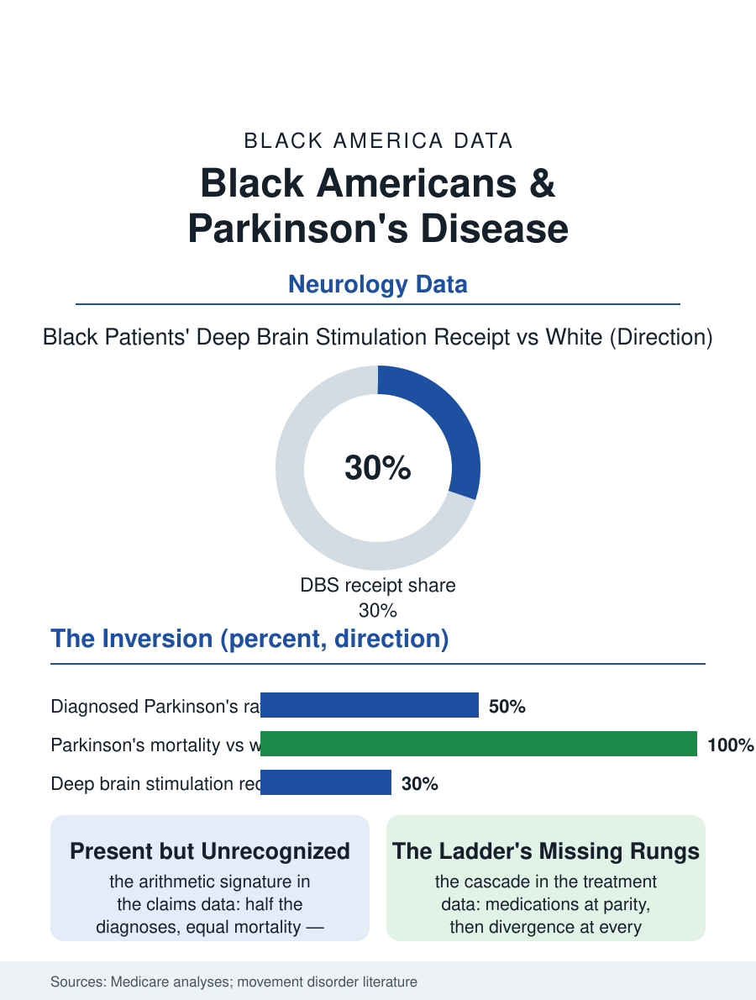

Black Public Health
Half the Diagnoses, All the Mortality: Black Americans and Parkinson's
Parkinson's is diagnosed at half the white rate and kills at the same rate in Black Americans, and the advanced therapies diverge at every step. The Parkinson's file.

Parkinson's disease presents an inversion in the neurology data: Black Americans are diagnosed with it at lower rates than white Americans, yet die of it at comparable or higher rates, a pattern the researchers read not as lower disease but as lower detection, with Black patients reaching diagnosis later and reaching the specialty care that changes outcomes at markedly lower rates. This article reads the Parkinson's file.
The Diagnosis Gap
The claims and cohort data compose the inversion's two halves. The incidence estimates from the large Medicare analyses put diagnosed Parkinson's in Black beneficiaries at roughly half the white rate, while the mortality records, death certificates naming Parkinson's as the underlying cause, show Black rates converging on and in some series exceeding the white figure, the arithmetic signature of a disease that is present but unrecognized until it is advanced. The diagnostic delay literature supplies the mechanism: Black patients in the movement disorder clinic studies arrive with longer symptom durations and more advanced motor scores at first specialty presentation, the tremor and gait changes having been attributed, in the primary care encounters along the way, to aging, arthritis, or the diabetes file's neuropathy, the attribution patterns the differential diagnosis studies document. The under-recognition has a research shadow: the genetic and biomarker studies of Parkinson's, built overwhelmingly on the diagnosed population, inherit the diagnosis gap, so that the Black Parkinson's genome is the least characterized in the literature even as the African ancestry populations' distinct genetic architecture, the variants the recent African-ancestry genome studies have begun surfacing, promises exactly the novel biology such studies exist to find.
The Treatment Ladder
Once diagnosed, the treatment cascade shows the file's consistent signature: Black patients receive the standard medication, levodopa, at comparable rates, and then diverge at every escalation. Deep brain stimulation, the surgical therapy that transforms advanced disease for the appropriately selected patient, is received by Black patients at a fraction of the white rate in the hospital discharge and claims data, a gap persisting after adjustment for income, insurance, and disease severity, composed of referral patterns, the surgical centers' geography, and the evaluation pipeline's length, each step of which sheds Black patients in the cascade pattern this section records for every advanced therapy. Physical, occupational, and speech therapy, the disciplines that preserve function in a disease whose management is substantially rehabilitative, show the same utilization gap in the home health and outpatient data. The specialist access variable underlies the whole ladder: neurologist density maps onto the usual geography, movement disorder subspecialists concentrate in the academic metros, and the Black Parkinson's population's distribution, Southern and rural in substantial part, places the patient farthest from the expertise the disease's management assumes. The tele-neurology programs that the pandemic era normalized post the file's early evidence of a narrowing evaluation gap, distance being one of the few variables in the file that technology directly dissolves.
Caregiving and the Long Course
Parkinson's is a decades-long disease in its modern managed form, and its final file is the caregiving one: the spouse and adult children who manage the freezing episodes, the falls, the dementia that attends the disease's later stages in a large share of patients, drawn from the same family caregiving workforce the aging files count, with the disease-specific support infrastructure, the support groups, the exercise programs whose boxing and dance classes have become the disease's community signature, distributed on the map of the affluent suburbs rather than the map of the undiagnosed. The file closes on the mortality arithmetic that opened it. A disease cannot be both half as common and equally deadly in the same population without the difference living in the detection, and the detection lives in the primary care visit where a tremor is or is not named, the referral that is or is not written, the specialist who is or is not within reach. The Parkinson's file is therefore, like so much of this section, an access file wearing a neurology coat, and its closing number is the surgical one: the stimulation therapy exists, the criteria are published, the candidates are countable in the claims data, and the gap between the candidates and the implanted, sorted by race, is the measure of everything between a Black patient and the movement disorder center's door.
More in Black Public Health
Hypertension Among Black Adults: Prevalence, Control, and Consequences
About 55 percent of Black adults have hypertension — the highest rate of any U.S. group. Prevalence, onset, control, and the stroke, heart, and kidney consequences in the data.
Diabetes Among Black Adults: Prevalence and Complications
Nearly one in five Black adults has diabetes, diagnosed or undiagnosed — and its complications fall with particular weight. The CDC data on prevalence, control, and outcomes.
Black Life Expectancy: The Gap at Birth and Its Causes
Black life expectancy at birth is about 73 years, roughly five years below the national figure — the summary measure of every health gap in this section. The CDC data.
Source: Medicare beneficiary analyses of Parkinson's incidence and treatment; movement disorder disparities literature.